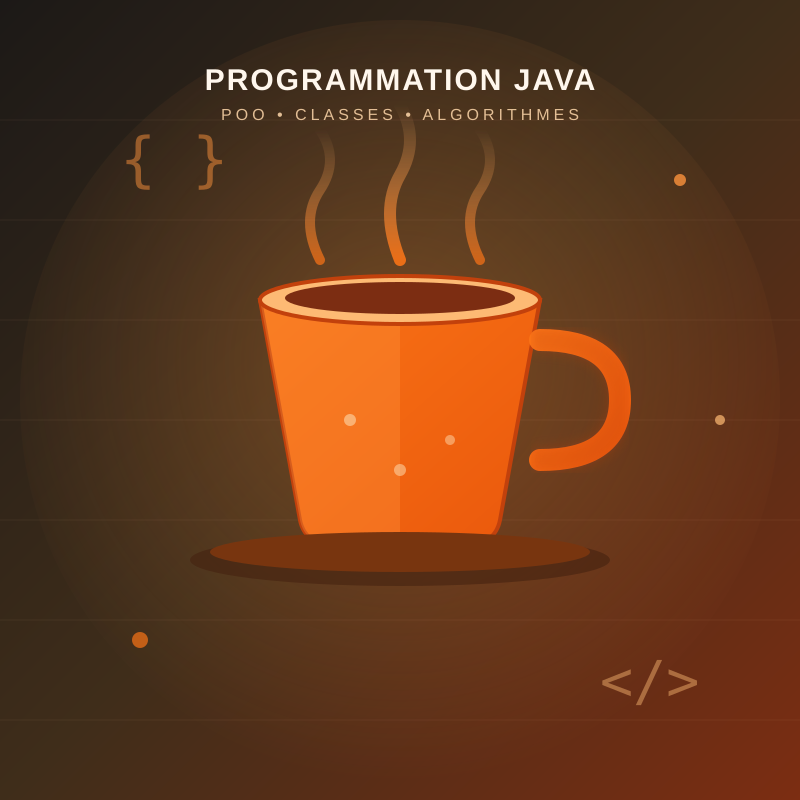

Cette application a été développée en Java pour gérer les informations des étudiants. Elle permet d'ajouter, modifier, supprimer et rechercher des étudiants dans une interface simple.
Retour aux projets
Présentation du projet Java
Créer une application de gestion des étudiants en utilisant les concepts fondamentaux de Java et de la programmation orientée objet.
• Ajouter un étudiant
• Modifier les informations
• Supprimer un étudiant
• Rechercher un étudiant
• Afficher la liste complète
Classes, objets, héritage, encapsulation, méthodes, collections Java et gestion des exceptions.
Langages et outils
✔ Java
✔ Programmation Orientée Objet
✔ Algorithmes
✔ Structures de données
✔ IntelliJ IDEA
✔ Eclipse
✔ VS Code
✔ Git
Ce que j'ai appris
Maîtrise des bases du langage Java, des algorithmes et de la programmation orientée objet.
Structuration du code, réutilisation des classes et bonne organisation des projets Java.
Ce projet m'a permis d'améliorer ma logique et ma capacité à développer des applications robustes.